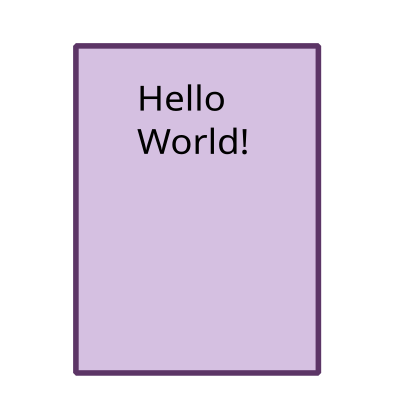
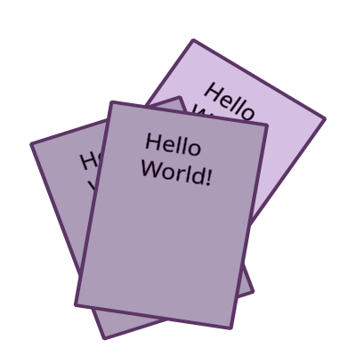
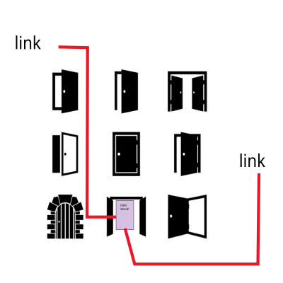
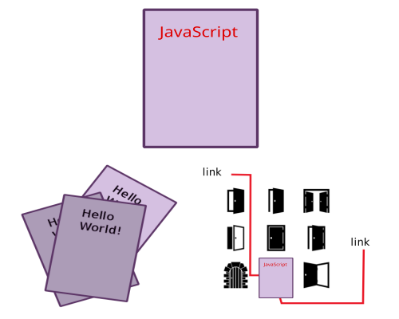

1. Присвоєння за посиланням і за значенням
Фундаментальною різницею складних типів від примітивів, є те, як вони зберігаються і копіюються.
Примітиви: рядки, числа, булі,null і undefined, при присвоєнні копіюються цілком, за значенням (by value).
Зі складними типами все не так. В змінній, якій присвоєно масив або об'єкт, зберігається не саме значення, а адрес його місця в пам'яті, іншими словами - посилання (покажчик) на нього, і передаються вони за посиланням (by reference).
Уявімо змінну у вигляді листа паперу. Значення цієї змінної ми представимо у вигляді запису на цьому аркуші.

Якщо ми хочемо повідомити вміст цього запису користувачам, то ми можемо вчинити так - зробити фізичні копії і вручити їх кожному, тобто зробити множинні незалежні копії (привласнення за значенням).

Або помістити лист в закритій кімнаті і дати користувачам ключ від цієї кімнати, тобто 1 примірник із загальним доступом (привласнення за посиланням).

Тепер змінимо дані на аркуші паперу, значення змінної. Очевидно, що відвідувачі кімнати завжди будуть бачити зміни, які ми вносимо, оскільки змінюється оригінал і вони мають доступ до нього. І також очевидно, що власники паперових копій не помітять змін дивлячись на свої копії.

При передачі по значенню, змінним виділяється новий осередок пам'яті і в неї копіюються дані. Аналогія з множинними копіями паперового листа має цілком реальне втілення, окремий лист для кожної копії.
При передачі за посиланням, замість створення нового об'єкта, змінної присвоюється посилання (покажчик) на вже існуючий об'єкт, тобто на його місце в пам'яті. Таким чином кілька змінних можуть вказувати на один і той же об'єкт, за аналогією із закритою кімнатою, у них є ключ доступу до оригіналу листа.
Всі примітивні типи присвоюються за значенням, тобто створюється копія.
let a = 5;
// Присвоєння за значенням, в пам'яті буде створена ще
// одна комірка в яку буде скопійовано значення 5
let b = a;
console.log(a); // 5
console.log(b); // 5
// Змінимо значення a
a = 10;
console.log(a); // 10
// Значення b не змінилося оскільки ця окрема копія
console.log(b); // 5
Складні типи - об'єкти, масиви, функції присвоюються за посиланням, тобто змінна просто отримує посилання на вже існуючий об'єкт.
const a = ['Mango'];
// Присвоєння за посиланням.
// Оскільки a це масив, в b записується посилання на вже існуючий
// масив в пам'яті. Тепер a і b вказують на один і той же масив.
const b = a;
console.log(a); // ['Mango']
console.log(b); // ['Mango']
// Змінимо масив, додавши ще один елемент, використовуючи покажчик з a
a.push('Poly');
console.log(a); // ['Mango', 'Poly']
// b змінилося теж, тому що b, як і a,
// просто містять посилання на одне і те ж місце в пам'яті
console.log(b); // ['Mango', 'Poly']
// Результат повторюється
b.push('Ajax');
console.log(a); // ['Mango', 'Poly', 'Ajax']
console.log(b); // ['Mango', 'Poly', 'Ajax']